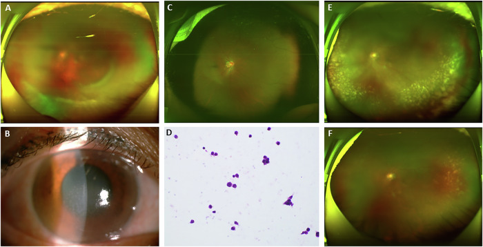
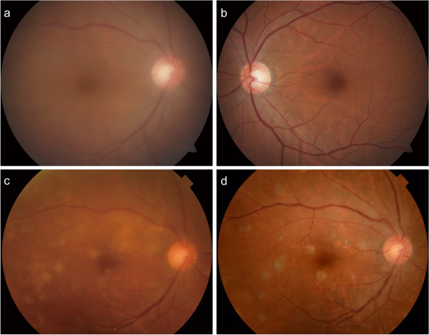
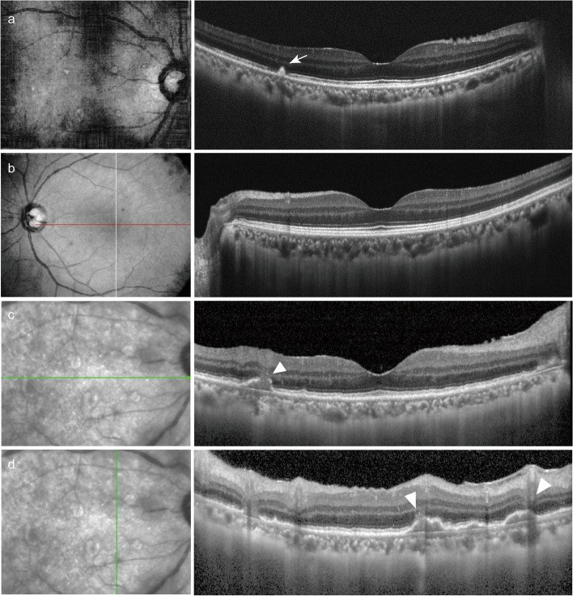
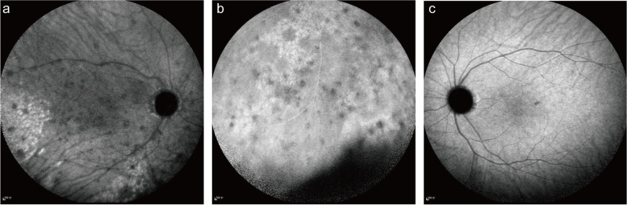
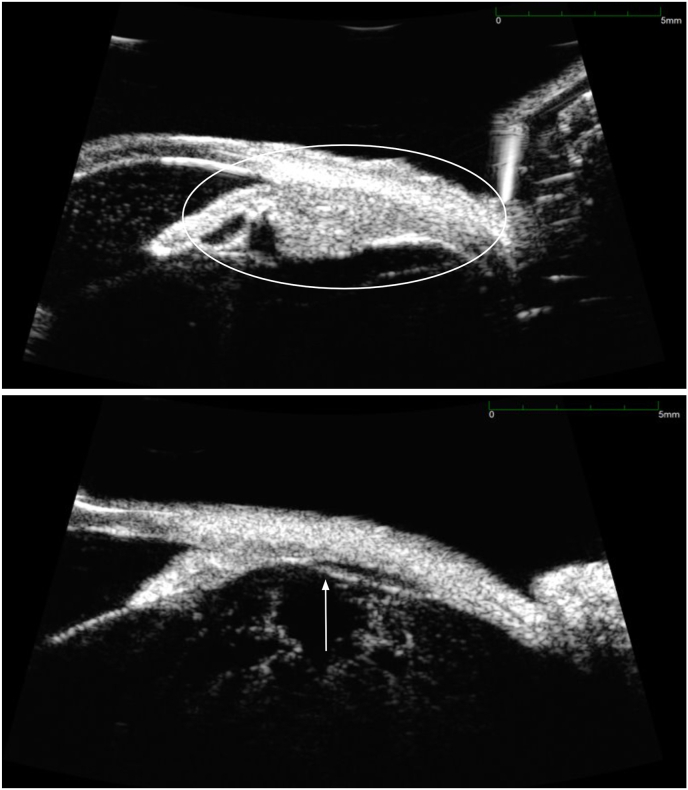
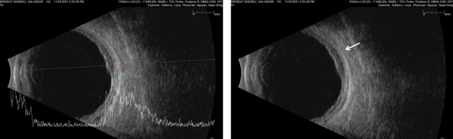
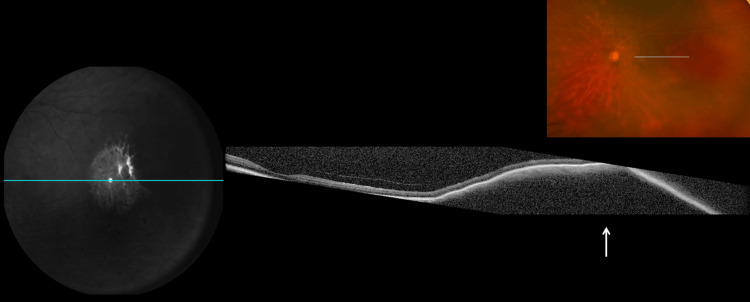

473 — U lympho T/NK nội nhãn & u lympho THỨ PHÁT ở mắt: khi IL-10 không cứu được bạn / Intraocular T/NK-cell lymphoma and secondary intraocular lymphoma
Tags: pattern:u-lympho-T-NK pattern:u-lympho-thu-phat pattern:viet-dich-kinh pattern:day-hac-mac vung:vong-mac vung:hac-mac vung:the-mi anatomy:the-mi score:IL-10-IL-6 score:EBER protocol:OCT protocol:UBM protocol:sinh-thiet-dich-kinh protocol:PET-CT
Mức chắc chắn (certainty): tổng hợp y văn (literature synthesis) — nhóm tự biên từ các bài mở: loạt 107 bệnh nhân ENKTL có biểu hiện mắt (Eye 2025, CC BY 4.0, PMC12669774), ca thể mi kèm tổng quan IL-10/IL-6 (Am J Ophthalmol Case Rep 2025, CC BY-NC-ND 4.0, PMC12686643), ca u lympho T/NK thứ phát từ ổ bụng kèm bảng so sánh T/NK vs B (BMC Ophthalmol 2022, CC BY 4.0, PMC8962092), và ca u lympho hắc mạc thứ phát sau DLBCL tinh hoàn (Cureus 2026, CC BY 4.0, PMC13054440).
Vì sao bài này quan trọng: bài 462 đã dạy "u lympho nội nhãn = DLBCL tế bào B, chốt bằng IL-10:IL-6 > 1". Nhưng u lympho nội nhãn không chỉ có tế bào B: thể T/NK (thường là ENKTL týp mũi — extranodal NK/T-cell lymphoma, nasal type) và u lympho thứ phát từ một ổ hệ thống (DLBCL tinh hoàn, u lympho sau phúc mạc…) có sinh học, dấu ấn và điều trị khác hẳn. Dùng IL-10 làm "chốt loại" sẽ bỏ sót đúng nhóm bệnh nặng nhất: trong tổng quan y văn của bài thể mi, 71% ca u lympho T nội nhãn đã công bố có tỉ lệ IL-10/IL-6 < 1 — tức là âm tính giả theo tiêu chuẩn của PVRL tế bào B. Hệ quả: bệnh nhân bị điều trị như "viêm màng bồ đào", u lympho T/NK tiến triển nhanh, hoại tử, thủng củng mạc, và 50% tử vong trong loạt ENKTL có biểu hiện mắt. Bài này bổ sung cửa thứ hai: EBV + miễn dịch tế bào + hình ảnh hắc mạc/thể mi, không chỉ cytokine.
1. Tổng quan bệnh học – cơ chế hình ảnh
- Ba nhóm cần phân biệt trong cùng một mắt "giả uveitis":
- U lympho nội nhãn tiên phát tế bào B (PVRL) — ~đa số, DLBCL, thường hai mắt, người > 60 tuổi, tổn thương dưới biểu mô sắc tố (sub-RPE) (bài 462).
- U lympho T/NK nội nhãn — thường là biểu hiện thứ phát của ENKTL týp mũi hoặc u lympho T ngoại vi (PTCL-NOS); thể tiên phát trong mắt cực hiếm. Trong loạt 107 ENKTL, 12 ca (11,2%) có triệu chứng mắt, trong đó 4 ca chỉ có tổn thương trong nhãn (PMC12669774).
- U lympho THỨ PHÁT ở mắt (secondary intraocular lymphoma) — u lympho hệ thống tái phát vào mắt như một ổ miễn dịch đặc quyền (immune-privileged site), có thể nhiều năm sau khi lui bệnh (ca DLBCL tinh hoàn: 5 năm; PMC13054440).
- Cơ chế hình ảnh (TẠI SAO — 4 cửa Argon):
- Tế bào lympho ác xâm nhập mô đệm hắc mạc/thể mi → dày hắc mạc lan tỏa (B-scan 2,8–3,2 mm trong ca thứ phát; bình thường ~< 2 mm tùy vị trí) và dày thể mi trên UBM. Vì u thấm (infiltrative) chứ không tạo khối rắn, siêu âm thấy dày đều, bờ không rõ, khác melanoma/nang.
- Tế bào u bám khoang dưới RPE → nốt tăng phản hồi (hyperreflective) dưới RPE trên OCT, đáy mắt thấy ổ vàng–kem sâu; đây là dấu dùng chung với PVRL, nên không phân biệt được T/NK vs B bằng OCT.
- Vì sao T/NK khác B về hình ảnh: ENKTL xâm lấn thành mạch (angioinvasive) và gây hoại tử, nên hay có hypopyon, nốt trên mống mắt, thủng củng mạc, viêm màng bồ đào trước dữ dội — bệnh cảnh "viêm tiền phòng" chứ không "lặng lẽ dưới RPE". Trong ca thể mi, biểu hiện đầu là giả hạt keratic (pseudo-keratic precipitates) + dày thể mi.
- Vì sao MRI hốc mắt giúp: u lympho giàu tế bào, tỉ lệ nhân/bào tương cao → hạn chế khuếch tán (restricted diffusion, ADC thấp), T1W đồng–giảm tín hiệu, T2W đồng–giảm tín hiệu, ngấm thuốc đồng nhất, vừa. Melanoma có T1W tăng tín hiệu (melanin) — đây là chốt loại trên MRI.
- Vì sao EBV quan trọng: ENKTL liên quan EBV gần như bắt buộc; dịch kính EBV DNA dương 9,90 × 10³ copy/mL và mô EBER 100% dương trong ca thứ phát (PMC8962092). EBV không đặc hiệu cho ung thư (còn gặp trong viêm nhiễm), nhưng EBER + kiểu hình CD56+/CD3ε+/TIA-1+/GrB+ là chốt mô bệnh.
- Ngưỡng định lượng phải nhớ:
- IL-10/IL-6: > 1 gợi ý u lympho tế bào B (PVRL); < 1 ở 71% u lympho T nội nhãn → KHÔNG dùng để loại trừ u lympho T/NK. Ca BMC có IL-10 39,4 pg/mL, IL-6 37,5 pg/mL, tỉ lệ 1,05 — vẫn là ENKTL.
- Loạt ENKTL có biểu hiện mắt (n = 12): tuổi trung vị 47 (25–74), nam:nữ = 5:1, 8 ca một mắt / 4 ca hai mắt, 8 ca chỉ tổn thương phần phụ / 4 ca chỉ trong nhãn, khoảng cách từ chẩn đoán ENKTL tới triệu chứng mắt 18,1 ± 20,8 tháng; theo dõi 23,5 (2–45) tháng: 9 tái phát, 6 tử vong (50%), sống trung bình 17 (2–45) tháng; trong 7 mắt của 6 ca sống, chỉ 2 mắt đạt 20/25, 4 mắt < đếm ngón tay (HM).
- Điều trị tại mắt: methotrexate (MTX) nội nhãn 400 µg/0,1 mL khi xác định di căn trong nhãn; cắt dịch kính chẩn đoán (diagnostic PPV) khi đục dịch kính/xuất huyết/bong võng mạc (PMC12669774).
- U lympho hắc mạc thứ phát: B-scan dày hắc mạc 2,8–3,2 mm, phản hồi trong trung bình–cao, không đục dịch kính lúc đầu — dễ bị đọc là "dày hắc mạc vô căn" (PMC13054440).
2. Mẫu hình + chẩn đoán phân biệt theo vị trí (gamut)
Câu hỏi lọc: "Viêm màng bồ đào/viêm nội nhãn ở người có u lympho hệ thống (hoặc tiền sử u lympho tinh hoàn, mũi, họng), điều trị corticoid chỉ đỡ tạm, kèm dày hắc mạc/thể mi hoặc hypopyon tái phát — có phải u lympho thứ phát/T/NK không?"
Gamut theo vị trí:
- Dịch kính (vitreous): u lympho T/NK (đục dịch kính nhanh, tế bào ít atypia trên H&E — dễ âm tính giả) vs PVRL tế bào B (462) vs viêm màng bồ đào trung gian vs nấm nội nhãn (463) vs CMV/ARN (452) vs viêm nội nhãn do vi khuẩn (mủ, đau, giờ–ngày).
- Hắc mạc (choroid): u lympho thứ phát (dày lan tỏa, không đục dịch kính) vs u lympho hắc mạc tiên phát vs melanoma (khối, T1W tăng) vs di căn hắc mạc (nhiều ổ, bệnh nguyên phát) vs hemangioma hắc mạc (tăng huỳnh quang sớm, T2 sáng).
- Thể mi (ciliary body): u lympho thể mi (dày trên UBM, giả hạt keratic, hạ nhãn áp) vs melanoma thể mi vs di căn vs viêm thể mi (cyclitis).
- Tiền phòng/mống mắt (anterior segment): ENKTL (hypopyon, nốt mống mắt, pseudohypopyon) vs viêm màng bồ đào trước vs u hắc mạc mống mắt vs di căn.
- Hốc mắt/phần phụ (orbit–adnexa): ENKTL mũi–hốc mắt (giả viêm mô tế bào, giả viêm xoang) vs viêm mô tế bào hốc mắt vs GPA/IgG4 (451).
3. Bảng so sánh phân biệt (ma trận đối chiếu)
| Thực thể (entity) | Hình ảnh điển hình | Chốt vào (rule-in) | Chốt loại (rule-out) | Gợi ý xác nhận |
|---|---|---|---|---|
| U lympho T/NK nội nhãn (ENKTL) | Đục dịch kính nhanh, hypopyon/nốt mống mắt, dày thể mi trên UBM, có thể thủng củng mạc | Tiền sử ENKTL mũi + EBV DNA dịch kính dương + EBER+ + CD56/CD3ε/TIA-1/GrB+ | IL-10/IL-6 > 1 không loại trừ; EBER âm + kiểu hình B (CD20+) → nghĩ B | PCR EBV dịch kính, tế bào học/miễn dịch, UBM thể mi, sinh thiết mũi nếu có ổ |
| PVRL tế bào B (462) | Ổ vàng–kem dưới RPE, đục dịch kính ít viêm, hai mắt, > 60 tuổi | IL-10 dịch kính > 400 pg/mL, IL-10:IL-6 > 1, MYD88 L265P | IL-10 thấp + EBV+ + CD56+ → chuyển hướng T/NK | Cytokine + MYD88 + CD20/PAX5 |
| U lympho thứ phát (B hoặc T) | Dày hắc mạc lan tỏa 2,8–3,2 mm, thâm nhiễm dưới võng mạc, có thể không đục dịch kính; ICGA đốm giảm huỳnh quang | Tiền sử u lympho hệ thống + dày hắc mạc + PET-CT có ổ ngoài mắt | Khối đơn độc T1W tăng + melanin → melanoma; hắc mạc bình thường → loại | B-scan 10–20 MHz, OCT, ICGA, PET-CT toàn thân, sinh thiết hắc mạc/dịch kính |
| Melanoma hắc mạc | Khối vòm, bờ rõ, T1W tăng – T2W giảm, siêu âm phản hồi trung bình–thấp + khoét âm (acoustic hollowing) | T1W tăng tín hiệu, vôi hóa/không, khối đơn độc | Dày lan tỏa hai bên + T1W không tăng → không phải melanoma | MRI hốc mắt + siêu âm A/B |
| Di căn hắc mạc | Nhiều ổ kem–trắng dẹt, hai mắt, bệnh nguyên phát rõ | U nguyên phát (vú/phổi) + nhiều ổ + FAF tăng | Một ổ dày lan tỏa đơn độc → ít nghĩ di căn | PET-CT, sinh thiết nếu cần |
| Viêm màng bồ đào trung gian | Đục dịch kính dày, "snowbank", không dày hắc mạc | Đáp ứng corticoid rõ, IL-10 thấp, không tế bào ác | Dày hắc mạc/thể mi + EBV+ → không phải vô căn | Theo dõi + cytokine + tế bào học |
| Nấm nội nhãn (463) | "Fluff ball"/"chuỗi ngọc trai", bối cảnh candidemia/ICU | Cấy/PCR nấm dương, bạch cầu trung tính trong dịch kính | EBER+ / tế bào lympho ác → u lympho | Cấy + PCR + soi đáy mắt |

(A, C, E) Đáy mắt góc rộng mắt trái: đục dịch kính và các ổ thâm nhiễm vàng–trắng dọc mạch máu lan tỏa, mờ dần sau điều trị; (B) tiền phòng: giả hạt keratic mịn rải rác; (D) tế bào học dịch kính: tế bào lympho rải rác, không atypia rõ — đây là lý do tế bào học đơn thuần dễ âm tính; (F) sau cắt dịch kính: dịch kính trong, võng mạc áp. Nguồn: Luo J et al., Eye (Lond) 2025 (PMC12669774) Fig. 2, CC BY 4.0.4. Protocol chẩn đoán + theo dõi + sơ đồ quyết định
Bước 1 — Hình ảnh (không xâm lấn):
- OCT hoàng điểm: nốt tăng phản hồi dưới RPE, bất thường RPE dạng "gò", dịch dưới võng mạc; đo chiều dày hắc mạc nếu OCT EDI.
- B-scan 10–20 MHz: đo chiều dày hắc mạc (ca thứ phát 2,8–3,2 mm), phát hiện đục dịch kính, bong võng mạc, loại khối đặc.
- UBM: bắt buộc khi nghi thể mi — đo độ dày thể mi, tìm dịch dưới võng mạc ngoại vi (ca PMC12686643).
- MRI hốc mắt: T1W, T2W, DWI/ADC, T1W fat-sat sau tiêm — u lympho hạn chế khuếch tán, T1W không tăng (loại melanoma).
- PET-CT toàn thân + MRI não: tìm ổ ngoài mắt (mũi, sau phúc mạc, tinh hoàn, CNS) — quyết định đây là thứ phát hay tiên phát.
Bước 2 — Lấy mẫu (chẩn đoán xác định):
- Chọc hút dịch kính/dịch tiền phòng hoặc cắt dịch kính chẩn đoán; gửi đồng thời: tế bào học, dòng chảy tế bào/miễn dịch tế bào (CD3, CD56, TIA-1, GrB, CD20, PAX5, Ki-67), EBER/EBV DNA, TCR/IgH PCR, IL-10/IL-6, NGS.
- Sinh thiết ổ ngoài mắt (mũi, hạch, sau phúc mạc) khi có — chốt chẩn đoán thường đến từ ổ ngoài mắt, không phải từ dịch kính (ca PMC12686643: sinh thiết mũi xác nhận tái phát ENKL sau 5 chu kỳ MTX nội nhãn).
- Nguyên tắc: không dùng corticoid trước khi lấy mẫu nếu nghi u lympho (làm ly giải tế bào → âm tính giả).
Bước 3 — Điều trị & theo dõi (khung):
- ENKTL: hóa trị chứa asparaginase (SMILE, DDGP, P-GemOx) ± xạ trị vùng mũi; thể trong nhãn: MTX nội nhãn 400 µg/0,1 mL ± cắt dịch kính; không dùng corticoid đơn thuần.
- U lympho B thứ phát: điều trị theo phác đồ của u lympho hệ thống (R-CHOP/R-MPV, ASCT nếu đủ điều kiện) + điều trị tại mắt (MTX/rituximab nội nhãn, xạ trị mắt) khi tổn thương đe dọa thị lực.
- Theo dõi: khám mắt + OCT/UBM mỗi 1–3 tháng trong năm đầu; MRI não/PET-CT định kỳ vì nguy cơ CNS và tái phát hệ thống; ở người sống sót sau DLBCL tinh hoàn, duy trì tầm soát mắt dài hạn (ca tái phát sau 5 năm).
flowchart TD
A[Viêm màng bồ đào hoặc viêm nội nhãn tái phát, đáp ứng corticoid một phần] --> B[OCT + B-scan + UBM + MRI hốc mắt DWI]
B --> C{Có dày hắc mạc hoặc dày thể mi hoặc tổn thương dưới RPE?}
C -->|Không| D[Xử trí theo uveitis thông thường, theo dõi sát]
C -->|Có| E[PET-CT toàn thân + MRI não + khám tai mũi họng]
E --> F[Chọc dịch kính hoặc cắt dịch kính chẩn đoán: tế bào học + miễn dịch + EBER/EBV DNA + IL-10/IL-6]
F --> G{Kiểu hình và EBV?}
G -->|CD56+/CD3e+/TIA-1+ va EBER duong| H[U lympho T/NK - hoi chan huyet hoc, phac do asparaginase + MTX noi nhan]
G -->|CD20+/PAX5+ va IL-10:IL-6 > 1| I[U lympho B - phac do DLBCL + dieu tri tai mat]
G -->|Khong ket luan| J[Sinh thiet o ngoai mat: mui, hach, sau phuc mac]
J --> G
H --> K[Theo doi OCT/UBM + PET-CT dinh ky; nguy co tu vong 50 phan tram trong loat ENKTL co bieu hien mat]
I --> K
5. Biến thể bình thường và cạm bẫy
- Bẫy chết người #1 — "IL-10 thấp = không phải u lympho": 71% u lympho T nội nhãn có IL-10/IL-6 < 1. Ca thể mi có tỉ lệ < 1 mà vẫn là ENKTL. → IL-10 chỉ dùng để nghiêng về B, không dùng để loại trừ.
- Bẫy #2 — "hypopyon = nhiễm trùng": ENKTL thể tiền phòng có giả hypopyon (pseudohypopyon) do tế bào u; cấy âm tính + EBER+ mới là chốt. Điều trị kháng sinh/kháng nấm kéo dài làm mất thời gian.
- Bẫy #3 — tế bào học "không atypia": trong ca Eye 2025, mô học dịch kính chỉ thấy tế bào lympho rải rác không atypia rõ — không loại trừ; phải có miễn dịch tế bào/EBER và sinh thiết ổ ngoài mắt.
- Bẫy #4 — dày hắc mạc đơn độc: ca DLBCL tinh hoàn có B-scan dày 2,8–3,2 mm, không đục dịch kính — nếu chỉ soi đáy mắt sẽ bỏ sót; hỏi tiền sử u lympho và chụp B-scan ở mọi ca dày hắc mạc không rõ nguyên nhân.
- Bẫy #5 — melanoma vs lymphoma trên MRI: melanoma T1W tăng tín hiệu do melanin; lymphoma T1W đồng/giảm + hạn chế khuếch tán. Đừng sinh thiết mù một khối T1W tăng.
- Bẫy #6 — "chỉ có một mắt": ENKTL hay một mắt (8/12), khác PVRL tế bào B (hai mắt 50–80%). Một mắt không loại trừ u lympho.
- Bẫy #7 — bỏ sót ổ nguyên phát: ENKTL luôn có liên quan mũi (12/12 trong loạt); phải nội soi mũi + sinh thiết kể cả khi triệu chứng mắt đến trước.
6. Tự lượng giá — Blind Quiz
Ca 1 — Nam 47 tuổi, tiền sử ENKTL týp mũi, nhìn mờ mắt trái 2 tuần; soi đáy mắt góc rộng:
- Hỏi: mô tả 2 thành phần bất thường? Vì sao không chốt là "viêm màng bồ đào"? Xét nghiệm nào ít xâm lấn nhất giúp nghiêng chẩn đoán?
Bấm để hiện đáp án (findings + chẩn đoán)
- Dấu hiệu: đục dịch kính + các ổ thâm nhiễm vàng–trắng dọc mạch máu lan tỏa; tiền phòng có giả hạt keratic mịn; tế bào học dịch kính lympho rải rác không atypia.
- Chẩn đoán: u lympho T/NK nội nhãn (ENKTL) tái phát/thứ phát — xác nhận bằng EBER+, kiểu hình CD56+/CD3ε+/TIA-1+/GrB+; trong loạt này 12/107 ENKTL có biểu hiện mắt, 50% tử vong, sống trung bình 17 tháng.
- Vì sao không chốt uveitis: tiền sử ENKTL + một mắt + đục dịch kính nhanh + đáp ứng corticoid một phần; cần EBV DNA dịch kính và sinh thiết mũi.
- Nguồn ảnh: Luo J et al., Eye (Lond) 2025 (PMC12669774) Fig. 2, CC BY 4.0.
Ca 2 — Nữ 55 tuổi, nhìn mờ mắt phải 10 tháng, không đau; đáy mắt phải (a) và trái (b) lúc đầu:

- Hỏi: bất thường chính? Nếu chỉ có ảnh này, 3 chẩn đoán phân biệt hàng đầu? Cần thêm gì để phân biệt T/NK vs B?
Bấm để hiện đáp án (findings + chẩn đoán)
- Dấu hiệu: (a) mắt phải đục dịch kính nặng che hoàn toàn hậu cực; (b) mắt trái bình thường; các panel (c, d) theo dõi: nhiều đốm vàng nhỏ ("leopard spots") ở hậu cực.
- Chẩn đoán: u lympho dịch kính–võng mạc thứ phát từ ENKTL sau phúc mạc; dịch kính IL-10 39,4 pg/mL, IL-6 37,5, tỉ lệ 1,05, EBV DNA 9,90 × 10³ copy/mL; khối sau phúc mạc EBER 100%, CD2+/CD3ε+/CD56+/TIA-1+/GrB+.
- Phân biệt T/NK vs B: EBER/EBV DNA, CD56/TIA-1/GrB (T/NK) vs CD20/PAX5/MYD88 (B); IL-10/IL-6 không phân biệt được (ca này 1,05).
- Nguồn ảnh: Chen et al., BMC Ophthalmol 2022 (PMC8962092) Fig. 1, CC BY 4.0.
Ca 3 — Cùng bệnh nhân Ca 2: OCT hoàng điểm lúc đầu (a, b) và khi theo dõi (c, d):

- Hỏi: tổn thương nằm ở lớp nào? Vì sao OCT không phân biệt được T/NK với u lympho B?
Bấm để hiện đáp án (findings + chẩn đoán)
- Dấu hiệu: (a) nốt tăng phản hồi dưới RPE (mũi tên trắng) + RPE không đều; (c) nhiều nốt tăng phản hồi; (d) các "gò" RPE (mũi tên) — tương ứng đốm vàng trên đáy mắt.
- Chẩn đoán: thâm nhiễm lympho dưới RPE — cùng cơ chế với PVRL tế bào B; OCT dương tính không cho biết dòng tế bào.
- Chốt dòng tế bào: EBER + miễn dịch tế bào; hình ảnh chỉ định hướng vị trí sinh thiết (dưới RPE/hắc mạc).
- Nguồn ảnh: Chen et al. (PMC8962092) Fig. 2, CC BY 4.0.
Ca 4 — Cùng bệnh nhân Ca 2: ICGA (a, b) và mắt trái (c):

- Hỏi: ICGA thấy gì? Dấu này có đặc hiệu cho u lympho không?
Bấm để hiện đáp án (findings + chẩn đoán)
- Dấu hiệu: (a, b) nhiều đốm giảm huỳnh quang (hypofluorescent spots) + chấm tăng huỳnh quang thành cụm ở hậu cực; (c) mắt trái bình thường.
- Ý nghĩa: ICGA phát hiện tổn thương hắc mạc kín đáo; đốm giảm huỳnh quang gặp ở u lympho, bệnh hắc võng mạc đa ổ, sarcoid, lao → không đặc hiệu, nhưng định vị ổ để sinh thiết.
- Nguồn ảnh: Chen et al. (PMC8962092) Fig. 3, CC BY 4.0.
Ca 5 — Nam 47 tuổi, tiền sử ENKTL mũi, nhìn mờ mắt trái; UBM thể mi trước (trên) và sau 7 tháng điều trị (dưới):

- Hỏi: tổn thương ở đâu? Vì sao siêu âm B thường bỏ sót? Điều gì giải thích đáp ứng với MTX nội nhãn?
Bấm để hiện đáp án (findings + chẩn đoán)
- Dấu hiệu: dày thể mi (vòng trắng) kèm dịch dưới võng mạc ngoại vi; sau 5 chu kỳ MTX nội nhãn thể mi mỏng lại (mũi tên).
- Vì sao B-scan bỏ sót: thể mi nằm sát chu biên (peripheral), khó đưa đầu dò; UBM tần số cao (35–50 MHz) mới đo được.
- Chẩn đoán: u lympho thể mi do ENKTL tái phát; IL-10/IL-6 < 1 (không điển hình B); sinh thiết mũi xác nhận sau 5 chu kỳ MTX.
- Nguồn ảnh: Louie et al., Am J Ophthalmol Case Rep 2025 (PMC12686643) Fig. 3, CC BY-NC-ND 4.0 — giữ nguyên bản, không crop/ghép.
Ca 6 — Nam 67 tuổi, tiền sử DLBCL tinh hoàn 5 năm, nhìn mờ mắt trái; B-scan và OCT:


- Hỏi: vì sao đây là "u lympho thứ phát" chứ không phải viêm hắc mạc? Ngưỡng độ dày hắc mạc trong ca này?
Bấm để hiện đáp án (findings + chẩn đoán)
- Dấu hiệu: dày hắc mạc lan tỏa ~2,8–3,2 mm, phản hồi trung bình–cao, không đục dịch kính; OCT: vật liệu tăng phản hồi dưới võng mạc, dịch dưới võng mạc, RPE gồ ghề, dày hắc mạc.
- Chẩn đoán: u lympho hắc mạc thứ phát sau DLBCL tinh hoàn — mắt là ổ miễn dịch đặc quyền, tái phát sau 5 năm; xác nhận bằng cắt dịch kính chẩn đoán trong lúc mổ bong võng mạc.
- Vì sao không phải viêm: không đau, không đục dịch kính, tiền sử DLBCL, dày hắc mạc đơn độc; viêm hắc mạc thường có dấu viêm tiền phòng và đáp ứng corticoid.
- Nguồn ảnh: Ganbold B et al., Cureus 2026 (PMC13054440) Fig. 5 và Fig. 3, CC BY 4.0.
Bài liên quan chéo
- 400 – Tổng quan Mắt & thị giác
- 462 – U lympho nội nhãn (PVRL) vs viêm màng bồ đào giả danh
- 463 – Viêm nội nhãn nội sinh do nấm (masquerade nhiễm trùng)
- 451 – Biểu hiện mắt của bệnh hệ thống
- 452 – Hoại tử võng mạc cấp (ARN) & CMV retinitis
- 411 – Siêu âm nhãn cầu (B-scan/UBM khi không thấy đáy mắt)
Ảnh
473_lympho-T-NK-mat_Fig2_PMC12669774-CCBY.jpg— Luo J et al., Eye (Lond) 2025 (PMCID: PMC12669774) Fig. 2, CC BY 4.0.473_lympho-T-NK-thu-phat_fundus_PMC8962092-CCBY.jpg— Chen et al., BMC Ophthalmol 2022 (PMCID: PMC8962092) Fig. 1, CC BY 4.0.473_lympho-T-NK-thu-phat_OCT_PMC8962092-CCBY.jpg— Chen et al. (PMC8962092) Fig. 2, CC BY 4.0.473_lympho-T-NK-thu-phat_ICGA_PMC8962092-CCBY.jpg— Chen et al. (PMC8962092) Fig. 3, CC BY 4.0.473_lympho-T-NK-the-hang_UBM_PMC12686643-CCBYNCND.jpg— Louie et al., Am J Ophthalmol Case Rep 2025 (PMCID: PMC12686643) Fig. 3, CC BY-NC-ND 4.0 (giữ nguyên bản, không crop/ghép).473_u-lympho-thu-phat-hac-mac_Bscan_PMC13054440-CCBY.jpg— Ganbold B et al., Cureus 2026 (PMCID: PMC13054440) Fig. 5, CC BY 4.0.473_u-lympho-thu-phat-hac-mac_OCT_PMC13054440-CCBY.jpg— Ganbold B et al. (PMC13054440) Fig. 3, CC BY 4.0.473_u-lympho-thu-phat-hac-mac_fundus_PMC13054440-CCBY.jpg— Ganbold B et al. (PMC13054440) Fig. 2, CC BY 4.0.- Chi tiết giấy phép từng ảnh trong
images/CREDITS.md. AuntMinnie / Retina Image Bank: chỉ dẫn link, không tải.
Không dùng để chẩn đoán độc lập khi chưa có người hướng dẫn.